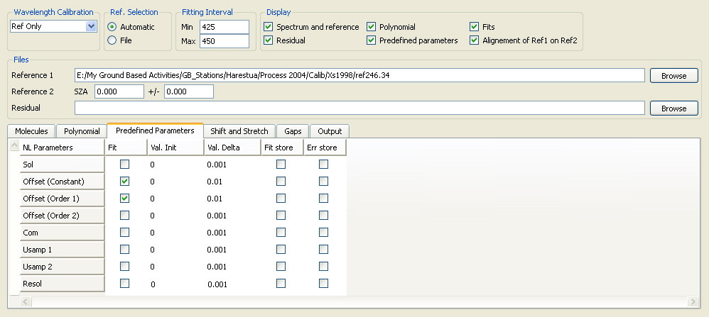

QDOAS Analysis Windows properties : Predefined Parameters page

This page proposes different parameters that can be fitted linearly or non linearly according to the fitting method :
- scaling factor for the control spectrum (Sol)
- offset
- common residuals (Com)
- undersampling (Usamp1 and Usamp2)
- synthetic cross section to fit very small differences in the resolution between the spectrum and the reference (Resol)
A cross-section file is always expected for Com parameter. A cross-section file is expected for Usamp1 and Usamp2 parameters if the method « File » has been selected in the Undersampling page of Project properties. To specify the name of the cross-section file, right-click the « Select File » option from the parameter line.
Val init and Val delta are respectively the initial value and convergence factor, two parameters used by the Non-Linear Least-Squares (NLLS) algorithm. In general, the default values should not be modified, except in case of convergence problems. Fit store and Err store columns are enabled only if the Analysis button is checked in the Output tab page of Project properties.
Offset
An ideal spectrometer in an ideal atmosphere would measure the part of the sunlight that has been elastically scattered by air molecules and particles in the zenith direction. In a real experiment however a number of possible additional sources of signal may add up to the ideal Rayleigh/Mie contribution leading to “offset” the measured intensity by a certain amount. In addition to the Ring effect, which is to a first approximation a natural source of offset, instrumental sources of offset also need to be considered like stray light in the spectrometer and dark current of the detector. This is the purpose of the offset parameter which is better described in the Description of Algorithms chapter of the QDOAS Software User Manual. The offset is normalized w.r.t. the intensity of the spectrum.
In some specific cases (typically, in the near UV, around 300 nm), the signal of the spectrum is very low and in order to avoid systematic logarithm errors when resolving the DOAS equation, the fit of a linearized offset is preferred (see the Polynomial page). Note that a linear offset and a non linear offset should not be fitted in the same spectral analysis window.
Common residual
When systematic structures appear in the residuals, it is sometimes useful to eliminate them using a synthetic cross-section obtained by averaging some of such residuals (cfr the « Residual » field in the Files frame of this dialog box). In DOAS fitting, this cross-section can be introduced either in the Molecules page with a user-defined symbol or in this page with the predefined symbol « Com ». In intensity fitting, it is recommended to use the predefined symbol Com that is always fitted linearly whatever the analysis method.
Undersampling
The undersampling is a well-known problem of GOME onboard the satellite ERS-2. It arises from the poor sampling ratio of the GOME instrument (2 to 3 pixels/FWHM of the resolution of the spectrometer) which results in a lost of spectral information when interpolating earthshine spectra during the DOAS fitting process. The problem can be corrected using ad-hoc cross-sections obtained by simulating the effect from a high-resolution solar reference. Undersampling cross-sections can be pre-calculated using the QDOAS undersampling tool.
Resol synthetic cross section
This cross section is built automatically by dividing the selected reference spectrum with itself but convolved with a gaussian with a FWHM of 0.05 nm. It allows accounting for very small differences in the resolution of the reference spectrum and the spectrum to analyze.